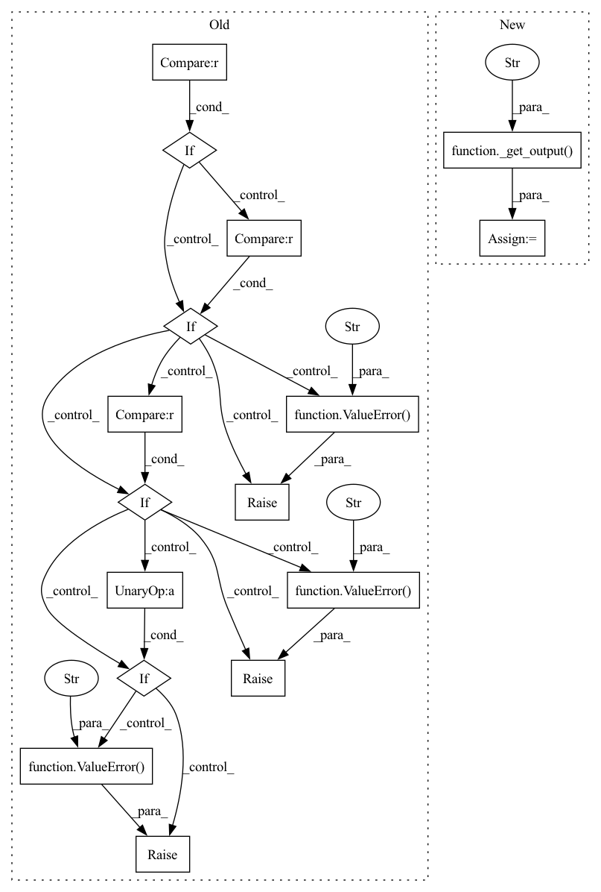

Pattern ID :17464

Before Change
"""
if f.dtype != weights.dtype:
weights = weights.astype(f.dtype)
if output is not None:
if output.dtype != f.dtype: raise ValueError("mahotas.convolve: `output` has wrong type")
if output.shape != f.shape: raise ValueError("mahotas.convolve: `output` has wrong shape")
if not output.flags["CONTIGUOUS"]: raise ValueError("mahotas.convolve: `output` is not c-array")
if mode not in modes:
raise ValueError("mahotas.convolve: `mode` not in %s" % modes)
if mode == "constant" and cval != 0.:
raise NotImplementedError("Please email mahotas developers to get this implemented.")
After Change
"""
if f.dtype != weights.dtype:
weights = weights.astype(f.dtype)
output = _get_output(f, output, "convolve")
_check_mode(mode, cval, "convolve")
return _convolve.convolve(f, weights, output, mode2int[mode])
def median_filter(f, Bc=None, mode="reflect", cval=0.0, output=None):
In pattern: SUPERPATTERN
Frequency: 3
Non-data size: 16
Instances
Fragment ID: 57922263
Project Name: luispedro/mahotas
Commit Name: 648d4d50901749951a7350637d57c574a527a6ba
Time: 2011-06-23
Author: luis@luispedro.org
File Name: mahotas/convolve.py
M Class Name: AnonimousClass
N Class Name: AnonimousClass
M Method Name: convolve(5)
N Method Name: convolve(5)
M Parent Class:
N Parent Class:
M File Name: mahotas/convolve.py
N File Name: mahotas/convolve.py
M Start Line: 60
M End Line: 68
N Start Line: 62
N End Line: 63
'>
Before Change
elif f.dtype != Bc.dtype:
Bc = Bc.astype(f.dtype)
rank = Bc.sum()//2
if output is not None:
if output.dtype != f.dtype: raise ValueError("mahotas.median_filter: `output` has wrong type")
if output.shape != f.shape: raise ValueError("mahotas.median_filter: `output` has wrong shape")
if not output.flags.contiguous: raise ValueError("mahotas.median_filter: `output` is not c-array")
else:
output = np.empty(f.shape, f.dtype)
if mode not in modes:
raise ValueError("mahotas.median_filter: `mode` not in %s" % modes)
After Change
elif f.dtype != Bc.dtype:
Bc = Bc.astype(f.dtype)
rank = Bc.sum()//2
output = _get_output(f, output, "median_filter")
_check_mode(mode, cval, "median_filter")
return _convolve.rank_filter(f, Bc, output, rank, mode2int[mode])
def rank_filter(f, Bc, rank, mode="reflect", cval=0.0, output=None):
'>
Fragment ID: 57922262
Project Name: luispedro/mahotas
Commit Name: 648d4d50901749951a7350637d57c574a527a6ba
Time: 2011-06-23
Author: luis@luispedro.org
File Name: mahotas/convolve.py
M Class Name: AnonimousClass
N Class Name: AnonimousClass
M Method Name: median_filter(5)
N Method Name: median_filter(5)
M Parent Class:
N Parent Class:
M File Name: mahotas/convolve.py
N File Name: mahotas/convolve.py
M Start Line: 100
M End Line: 110
N Start Line: 96
N End Line: 97
'>
Before Change
median_filter : A special case of rank_filter
"""
Bc = morph.get_structuring_elem(f, Bc)
if output is not None:
if output.dtype != f.dtype: raise ValueError("mahotas.rank_filter: `output` has wrong type")
if output.shape != f.shape: raise ValueError("mahotas.rank_filter: `output` has wrong shape")
if not output.flags.contiguous: raise ValueError("mahotas.rank_filter: `output` is not c-array")
else:
output = np.empty(f.shape, f.dtype)
if mode not in modes:
raise ValueError("mahotas.rank_filter: `mode` not in %s" % modes)
After Change
median_filter : A special case of rank_filter
"""
Bc = morph.get_structuring_elem(f, Bc)
output = _get_output(f, output, "rank_filter")
_check_mode(mode, cval, "rank_filter")
return _convolve.rank_filter(f, Bc, output, rank, mode2int[mode])
'>
Fragment ID: 57922264
Project Name: luispedro/mahotas
Commit Name: 648d4d50901749951a7350637d57c574a527a6ba
Time: 2011-06-23
Author: luis@luispedro.org
File Name: mahotas/convolve.py
M Class Name: AnonimousClass
N Class Name: AnonimousClass
M Method Name: rank_filter(6)
N Method Name: rank_filter(6)
M Parent Class:
N Parent Class:
M File Name: mahotas/convolve.py
N File Name: mahotas/convolve.py
M Start Line: 144
M End Line: 154
N Start Line: 132
N End Line: 133